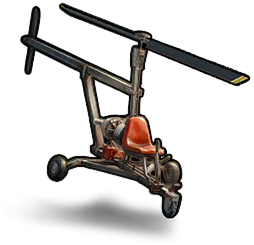 直升机Copter | 100 | — | 150 | — | — |
 金色弹药golden.cartridge 金色弹药golden.cartridge | 100 | — | — | — | — |
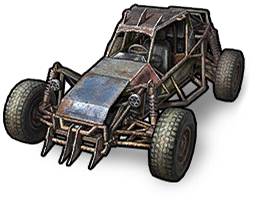 越野车Buggy | 70 | — | 150 | — | — |
 炮塔Turret 炮塔Turret | 50 | 5 | 25 | — | — |
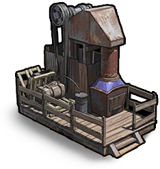 氏族采石场Clan Mining Quarry | 50 | — | 75 | 150 | — |
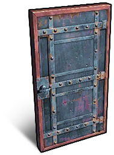 装甲门Armored door | 35 | 10 | 35 | — | — |
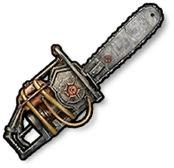 链锯chainsaw | 35 | 10 | — | — | — |
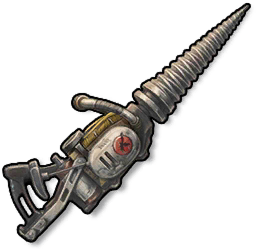 风镐jackhammer | 35 | 10 | — | — | — |
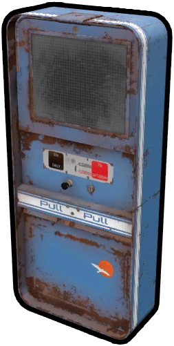 自动售货机Vending Machine | 35 | — | 50 | — | — |
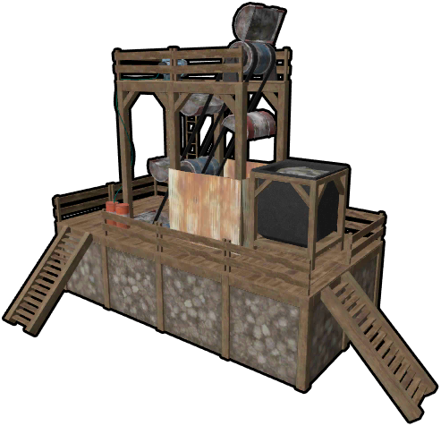 采石场Mining Quarry | 25 | 5 | — | 150 | — |
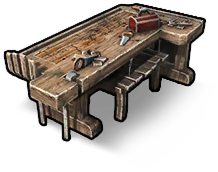 工作台Workbench | 25 | — | — | 50 | — |
 精确射手步枪dmr 精确射手步枪dmr | 20 | 7 | 18 | — | — |
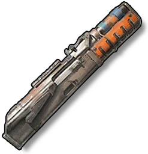 步枪枪身Rifle Body | 20 | 2 | — | — | — |
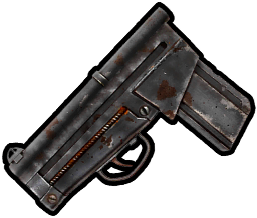 步枪零件Rifle Part | 20 | 2 | — | — | — |
 定时炸药Timed Explosive Charge 定时炸药Timed Explosive Charge | 20 | — | — | — | — |
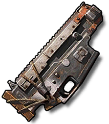 半自动枪身Semi Automatic Body | 15 | 1 | — | — | — |
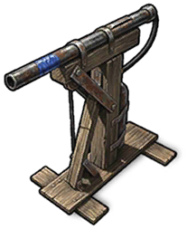 枪械陷阱Gun Trap | 15 | — | 30 | 12 | — |
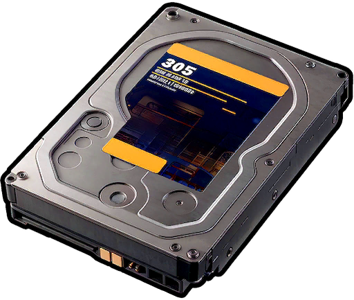 硬盘Hard Drive | 15 | — | — | — | — |
 自制手枪Handmade Pistol 自制手枪Handmade Pistol | 12 | — | 12 | — | — |
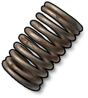 金属弹簧Metal Spring | 12 | — | 5 | — | — |
 汤普森冲锋枪Thompson 汤普森冲锋枪Thompson | 10 | 6 | 20 | — | — |
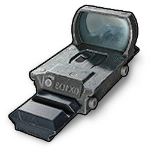 全息瞄准镜weapon.mod.holosight | 10 | 3 | — | — | — |
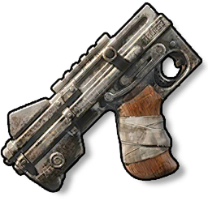 冲锋枪枪身SMG Body | 10 | 1 | — | — | — |
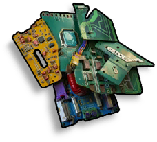 科技垃圾Tech Trash | 10 | 1 | — | — | — |
 冲锋枪Submachine Gun 冲锋枪Submachine Gun | 10 | — | 12 | — | — |
 火箭弹Rocket 火箭弹Rocket | 10 | — | 12 | — | — |
 钢珠枪steel.ball.gun 钢珠枪steel.ball.gun | 10 | — | 12 | — | — |
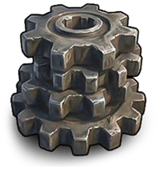 齿轮Gears | 10 | — | 5 | — | — |
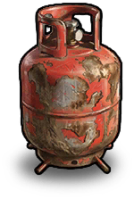 空丙烷罐Empty Propane Tank | 8 | — | 12 | — | — |
 火箭筒Rocket Launcher 火箭筒Rocket Launcher | 7 | 15 | 75 | — | — |
 金属板Sheet Metal 金属板Sheet Metal | 7 | 1 | 20 | — | — |
 左轮手枪Revolver 左轮手枪Revolver | 7 | 1 | 15 | — | — |
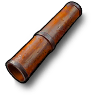 金属管Metal Pipe | 7 | — | 5 | — | — |
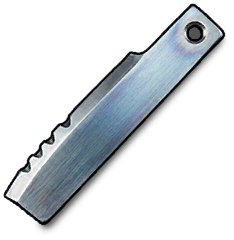 金属刀片Metal Blade | 5 | — | 5 | — | — |
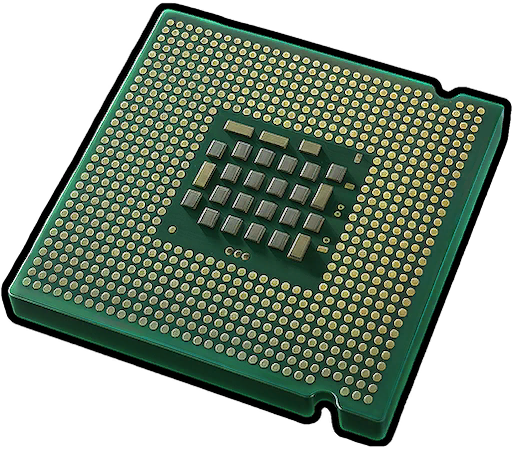 微处理器Microprocessor | 5 | — | — | — | — |
 信号枪Flare Gun 信号枪Flare Gun | 4 | — | 8 | — | — |
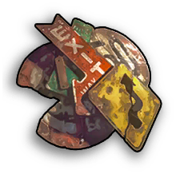 道路标志Road Signs | 4 | — | — | — | — |
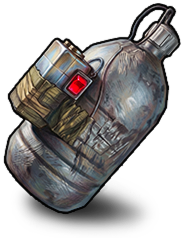 活动自制手榴弹event.grenade.makeshift | 2 | — | 5 | — | — |
| 金色齿轮golden.gear | 1 | — | — | — | — |
 DVL 步枪dvl DVL 步枪dvl | — | 25 | — | — | — |
 KRISS Vector 冲锋枪Kriss Vector KRISS Vector 冲锋枪Kriss Vector | — | 25 | — | — | — |
 自制轻机枪hmlmg 自制轻机枪hmlmg | — | 22 | 35 | — | — |
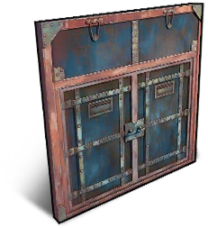 装甲双开门Armored double door | — | 20 | — | — | — |
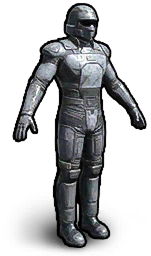 军用套装military.suit | — | 17 | 50 | — | — |
 突击步枪Assault Rifle 突击步枪Assault Rifle | — | 15 | 35 | — | — |
 猎枪Hunting Rifle 猎枪Hunting Rifle | — | 10 | 30 | — | — |
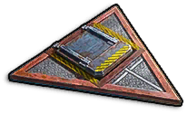 装甲三角舱门Armored triangular hatch | — | 10 | — | — | — |
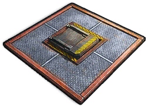 装甲方形舱门Armored square hatch | — | 10 | — | — | — |
 沙漠之鹰手枪desert.eagle 沙漠之鹰手枪desert.eagle | — | 5 | 30 | — | — |
 霰弹枪Shotgun 霰弹枪Shotgun | — | 5 | — | 25 | — |
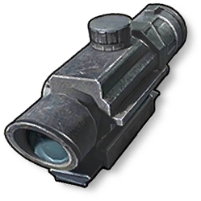 光学瞄准镜weapon.mod.optical.scope | — | 5 | — | — | — |
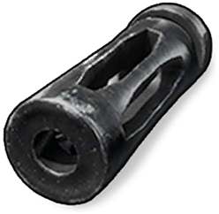 补偿器weapon.mod.compensator | — | 5 | — | — | — |
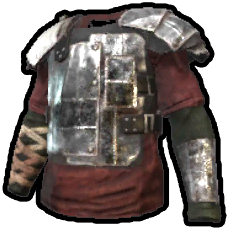 金属胸甲Metal Chestplate | — | 4 | 20 | — | — |
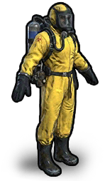 防化服Hazmat Suit | — | 4 | — | — | — |
 金属护腿Metal Leggings 金属护腿Metal Leggings | — | 3 | 18 | — | — |
 温彻斯特步枪winchester 温彻斯特步枪winchester | — | 3 | — | 25 | — |
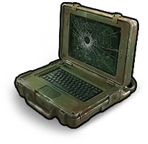 瞄准计算机Targeting Computer | — | 2 | 30 | — | — |
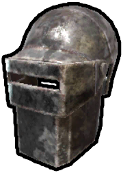 金属面罩Metal Mask | — | 2 | 16 | — | — |
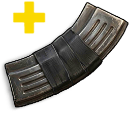 扩容弹匣weapon.mod.ext.magazine | — | 2 | — | — | — |
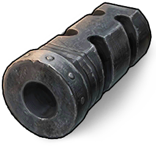 枪口制退器weapon.mod.muzzle.brake | — | 2 | — | — | — |
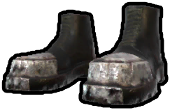 金属靴Metal Boots | — | 1 | 16 | — | — |
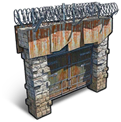 高石门High Stone Gates | — | 1 | 15 | — | 125 |
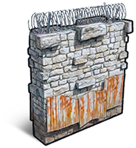 高石墙High Stone Wall | — | 1 | — | — | 75 |
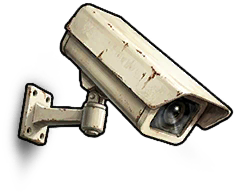 监控摄像头CCTV Camera | — | 1 | — | — | — |
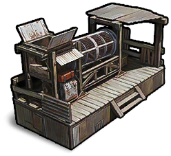 氏族废料回收机Clan Scrap Recycler | — | — | 50 | 150 | — |
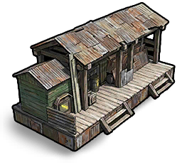 氏族锯木厂Clan Sawmill | — | — | 50 | 100 | — |
 砍刀Machete 砍刀Machete | — | — | 40 | 60 | — |
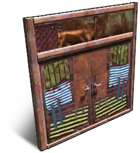 金属双开门Metal double door | — | — | 40 | — | — |
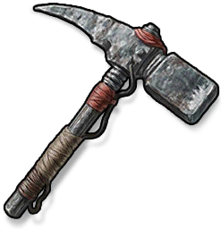 镐Pickaxe | — | — | 30 | — | — |
 钉头锤Mace 钉头锤Mace | — | — | 25 | 50 | — |
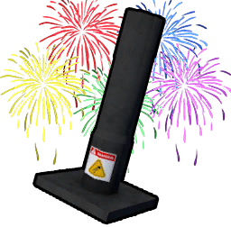 烟花Fireworks | — | — | 25 | — | — |
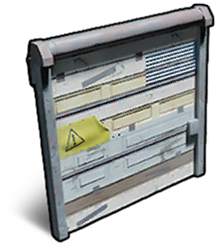 车库门Garage Door | — | — | 25 | — | — |
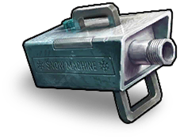 造雪机Snow Machine | — | — | 25 | — | — |
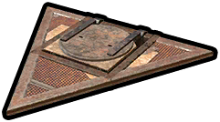 金属三角舱门Metal triangular hatch | — | — | 25 | — | — |
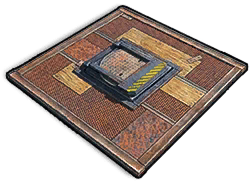 金属方形舱门Metal square hatch | — | — | 25 | — | — |
| 金属门Metal Door | — | — | 18 | — | — |
| 高木门High Wooden Gates | — | — | 15 | 100 | — |
| 撕裂锯Saw-Ripper | — | — | 15 | 25 | — |
| 床Bed | — | — | 15 | 20 | — |
 木制尖刺棒Wooden Spiked Club 木制尖刺棒Wooden Spiked Club | — | — | 15 | 10 | — |
| 军用手榴弹grenade.military | — | — | 15 | — | — |
| 大锅Cauldron | — | — | 15 | — | — |
| 密码锁Code Lock | — | — | 15 | — | — |
| 金属射击孔Embrasure Metal | — | — | 15 | — | — |
| 铁砧Anvil | — | — | 15 | — | — |
 铁矛Iron Spear 铁矛Iron Spear | — | — | 12 | 25 | — |
| 大型储物箱Large Storage Box | — | — | 10 | 25 | — |
 弩Crossbow 弩Crossbow | — | — | 10 | 15 | — |
| 斧头Axe | — | — | 5 | 10 | — |
| 碎石工具Stonecracker | — | — | 5 | 10 | — |
| 简易瞄准镜weapon.mod.simple.scope | — | — | 5 | 7 | — |
| 医疗包Medkit | — | — | 5 | — | — |
| 吸顶灯Ceiling Light | — | — | 5 | — | — |
| 活动烟雾弹grenade.smoke | — | — | 5 | — | — |
| 空豆罐头Empty Beans Can | — | — | 5 | — | — |
| 空金枪鱼罐头Empty Tuna Can | — | — | 4 | — | — |
| 电缆Cables | — | — | 3 | — | — |
| 炸药Explosives | — | — | 2 | — | — |
| 12 号鹿弹12 Gauge Buckshot | — | — | 1 | — | — |
| 5.56 毫米步枪弹5.56 Rifle Ammo | — | — | 1 | — | — |
| 手枪弹药Pistol Ammo | — | — | 1 | — | — |
| 自制弹壳ammo.handmade.shell | — | — | 1 | — | — |
| 钢珠弹药ammo.steel.ball | — | — | 1 | — | — |
| 木塔Tower Wood | — | — | — | 100 | — |
| 高木墙High Wooden Wall | — | — | — | 75 | — |
| 领地柜Cupboard | — | — | — | 50 | — |
| 木制双开门Wooden double door | — | — | — | 25 | — |
 木矛Wooden Spear 木矛Wooden Spear | — | — | — | 25 | — |
| 储物箱Storage Box | — | — | — | 12 | — |
| 建筑锤Building Hammer | — | — | — | 10 | — |
 木弓Wooden Bow 木弓Wooden Bow | — | — | — | 10 | — |
| 木门Wooden Door | — | — | — | 10 | — |
| 钥匙锁Key Lock | — | — | — | 10 | — |
| 火把Torch | — | — | — | 5 | — |
| 石斧Stone Hatchet | — | — | — | 5 | — |
| 窗户Window | — | — | — | 5 | — |
| 蜡烛Candles | — | — | — | 5 | — |
| 弩箭Bolt | — | — | — | 1 | — |
| 木板Plank | — | — | — | 1 | — |
| 木棍Stick | — | — | — | 1 | — |
| 箭Arrow | — | — | — | 1 | — |
| 熔炉Furnace | — | — | — | — | 25 |
| 篝火Campfire | — | — | — | — | 12 |
| 圣诞帽Santa Hat | — | — | — | — | — |
| 女巫帽Witch Hat | — | — | — | — | — |
| 木凉鞋Wooden Sandals | — | — | — | — | — |
| 木制护腿Wooden Leggings | — | — | — | — | — |
| 木制胸甲Wood Chestplate | — | — | — | — | — |
| 木头盔Wooden Helmet | — | — | — | — | — |
| 派对尖帽（原英文显示名为皮革头盔）Leather Helmet | — | — | — | — | — |
| 燃料瓶Fuel Bottle | — | — | — | — | — |
| 皮革头盔Leather Helmet | — | — | — | — | — |
| 皮革护腿Leather Leggings | — | — | — | — | — |
| 皮革胸甲Leather Chestplate | — | — | — | — | — |
| 皮靴Leather Boots | — | — | — | — | — |
| 睡袋Sleeping Bag | — | — | — | — | — |
| 精灵帽Elf Hat | — | — | — | — | — |
| 纸杯蛋糕手榴弹（原英文显示名为雪球）Snowball | — | — | — | — | — |
| 纸灯笼Paper lantern | — | — | — | — | — |
 绳子Rope 绳子Rope | — | — | — | — | — |
| 绷带Bandage | — | — | — | — | — |
 缝纫套件Sewing Kit 缝纫套件Sewing Kit | — | — | — | — | — |
| 背包Backpack | — | — | — | — | — |
| 防水布Tarp | — | — | — | — | — |
| 骨制护腿Bone Leggings | — | — | — | — | — |
| 骨制胸甲Bone Chestplate | — | — | — | — | — |
| 骨头盔Bone Helmet | — | — | — | — | — |
 骨棒Bone Club 骨棒Bone Club | — | — | — | — | — |
| 骨靴Bone Boots | — | — | — | — | — |
 氧化物生存岛百科全书
氧化物生存岛百科全书